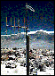
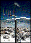

Volcano Web
In this lesson you will use the Internet
to research information on volcanoes and then write a report on your
results.
In this Lesson...
A volcano is a location where magma,
or hot melted rock from within a planet, reaches the surface.
It may happen violently, in a massive supersonic explosion,
or more quietly, as a sticky, slow lava flow.
Volcanoes have been a part of earth's history long before humans.
Compare the history of human beings, a few million years in the
making, to that of the Earth, over four billion years in the
making.
Volumes of Some Well-Known Volcanic Eruptions
Eruption Date Volume in km^3
-------- ---- --------------
Paricutin, Mexico 1943 1.3
Mt. Vesuvius, Italy 79 A.D. 3
Mount St. Helen, Washington 1980 4
Krakatoa, Indonesia 1883 18
Long Valley, California pre-historic 500 - 600
Yellowstone, Wyoming pre-historic 2400
The study of volcanoes, or Volcanology, includes many odd
terms. How many of these do you know?
- caldera
- vesicularity
- pahoehoe
- rheology
- lahar
Listed below are two places in the United States that are considered
"active" volcanic areas.
Mount St Helens
On May 18, 1980, after a long period of rest, this quiet mountain in
Washington provided detailed observations on
the mechanics of highly explosive eruptions.
Long Valley
This field seismometer measures earthquakes associated with
subsurface volcanic forces and may help to predict future events. It
sits on a plateau known as the "Volcanic Tableland" formed by a major
eruption 600,000 years ago.
 -- [full size image, 55k] --
Mars has its fair share of volcanic landforms,
including the largest known volcano in the solar system,
Olympus Mons
Your mission is to find information and report on a volcano, other
than the ones listed above, that has erupted in the last 100 years.
Your reports must include:
- Type of volcano
- Geographic location
- Name, distance, and population of nearest major city
- Date of most recent eruption and date of most destructive
eruption
- Other events associated with the last eruption (earthquakes,
floods, mudslides, etc)
Then, attach a one page description on the major hazards to humans in
the vicinity of this volcano. Speculate on what you would do if you
were in charge of minimizing the risk to the population.
References
Use these references to start your research:
![ -- [full size image, 55k] --](../pictures/seismo.jpg){kind=link}